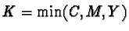

A color monitor emits light and consequently relies on the RGB colorspace, which is an additive color system. Ink on paper, however, is a totally different story. Ink absorbs light and the color we see from it is the light that was reflected and not absorbed. If we shine a white light on an area and the color seen is cyan, it is because the red component of the white light was absorbed leaving only cyan to be reflected. Similarly, magenta absorbs green, and yellow absorbs blue. Thus, the cyan, magenta, and yellow colors make a subtractive color space, which is the anti-space of RGB. This colorspace is called CMY for cyan, magenta, and yellow. For a pixel that has R, G, and B components in the RGB colorspace, the corresponding C, M, and Y components are just (255-R), (255-G), and (255-B).
Due to the physical nature of colored inks, the CMY colorspace is perfect for working with printed images. Or almost. In principle, the addition of equal amounts of cyan, magenta, and yellow is like subtracting equal amounts of red, green, and blue. We know that equal amounts of R, G, and B make a neutral color, so equal amounts of C, M, and Y do too. Thus, adding large and equal amounts of cyan, magenta, and yellow makes black, and adding very small amounts makes a color that is close to white. At least this is true when CMY is used to print on white paper.
In practice, due to imperfections in inks, adding equal amounts of cyan, magenta, and yellow does not make a deep dark black. Rather, it produces a muddy brown. To remedy this problem, printers subtract out some of the cyan, magenta, and yellow from an image and replace it with black. This new colorspace is called CMYK, and it significantly improves the depth and tonal range of printed images. Here, the K in CMYK stands for black.
How much cyan, magenta, and yellow can be subtracted out and replaced by black? Because neutral colors require equal amounts of cyan, magenta, and yellow, the most that can be subtracted out for a pixel is the minimum of its C, M, and Y components. Thus, is the maximum black that can be extracted, and the resulting new values of C, M, and Y are just the old values less this value of K. Although choosing K to be the minimum of C, M, and Y is reasonable, it is not necessary; it can also be chosen to be less than this value.
In addition to CMYK's natural relationship to printing because its subtractive qualities mirrors that of inks, it also has another important, more pragmatic advantage. Replacing equal amounts of three colored inks with a single black one can significantly reduce the amount of ink printed on the paper. This means that the ink will dry faster and the printing presses can produce more copy in the same amount of time.
There are also significant advantages to CMYK when doing color correction on an image that will end up in a printed format (see, for example, [6]). The most significant is that the range of colors, known as the color gamut, that can be produced with inks is significantly smaller than what can be created on a color monitor. Thus, it isn't sensible to invest a lot of time working on an RGB image only to convert it to CMYK for printing at the end. This will more than likely produce many out of gamut colors. When the final result is a printed image it is more sensible to convert to CMYK before performing any color transformations.
Unfortunately, the GIMP provides very little support for working in CMYK. There is the Decompose function, found in the Image:Image/Mode menu, which offers a CMYK option in its dialog. This is not terribly useful, though. To make the GIMP truly pre-press capable, the following is needed:
There is also the perception that spot colors are needed to make an effective pre-press image manipulation tool. Although there is much pageantry about the colorimetry, device calibration, and Pantone ink systems available for Adobe's Photoshop, these are somewhat of a red herring. Making these systems work is difficult and unreliable. Physical printing devices like presses tend to produce different results from day to day and even from run to run. In the printing process, there are many problems that can change the color balance so carefully calibrated on the monitor. The amounts of ink the printer uses, the capability of the press to apply the specified percentages of ink uniformly across the printing surface, and many other environmental and press health factors make for significant variability in the final result. No amount of calibration and proprietary ink systems can fix that.
Thus, the main hurdle to cross before the GIMP can become a viable pre-press tool is the functionality given in the preceding bulleted list.